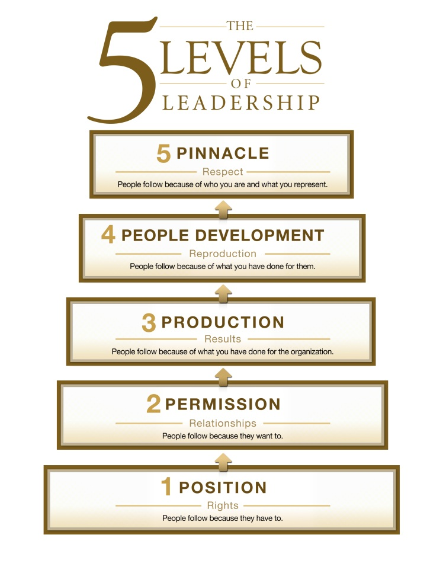
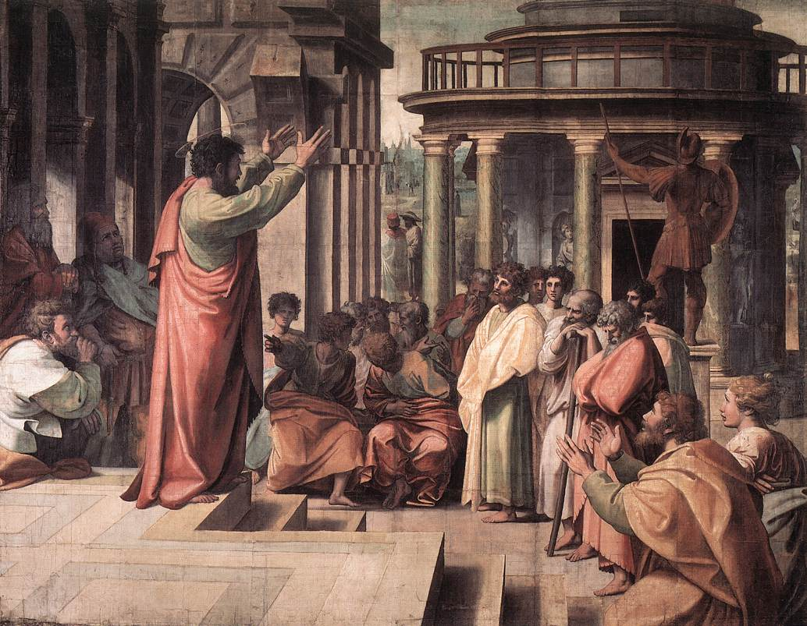
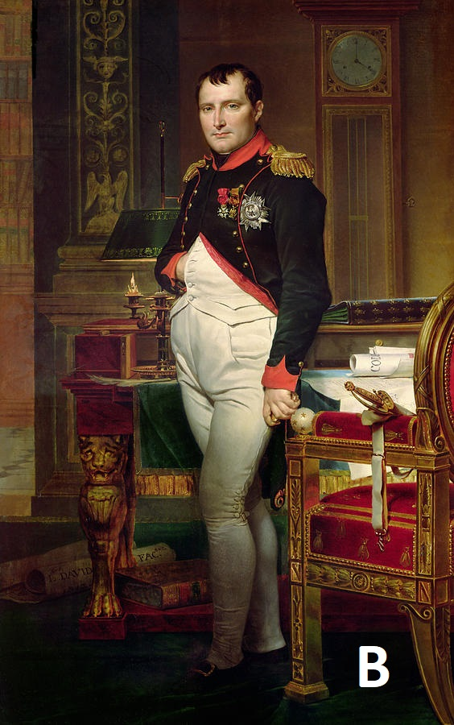
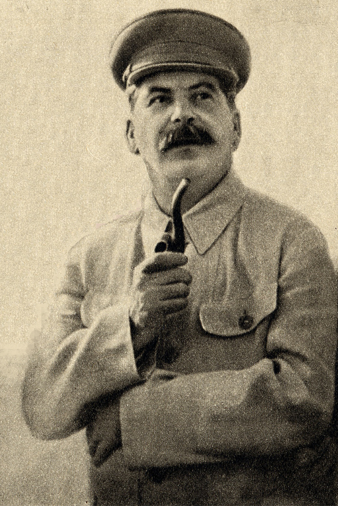

"A leader is one who knows the way, goes the way, and shows the way."
John C. Maxwell
What are the most important qualities of a good leader?
Ingredients of leadership
- Guiding vision
- Passion
- Trust
- Integrity
- Curiosity
- Daring
On Becoming a Leader by Warren Bennis
Why good leaders must read emotions?
The 5 Levels of Leadership (John Maxwell)
Athenian Democracy
The greatest leaders from history
The greatest leaders from history

Leadership game
Quiz
Which of following is not one of the Ingredients Of leadership accoring to Warren Bennis?
- A: Trust
- B: Curiosity
- C: Daring
- D: Wisdom
Which of following is not one of the Ingredients Of leadership accoring to Warren Bennis?
The correct answer: D: Wisdom
At what age was Joan of Arc burned at the stake?
At what age was Joan of Arc burned at the stake?
The correct answer: 19
How many assassination attempts did Adolf Hitler survived?
How many assassination attempts did Adolf Hitler survived?
The correct answer: 32
When did Steve Jobs announce the first IPhone?
- A: 2005
- B: 2007
- C: 2008
- D: 2010
When did Steve Jobs announce the first IPhone?
The correct answer: B: 2007
Activity: Labyrinth
What is the third level of leadership accoring to John Maxwell?
- A: People development
- B: Permission
- C: Production
- D: Propagation
What is the third level of leadership accoring to John Maxwell?
The correct answer: C: Production
What was the total number of Greek forces at the Battle of Thermopylae?
What was the total number of Greek forces at the Battle of Thermopylae?
The correct answer: approx. 7000
For what category did Nelson Mandela get the Nobel price?
- A: literature
- B: humanity
- C: physiology
- D: peace
For what category did Nelson Mandela get the Nobel price?
The correct answer: D: peace
When did Julius Caesar became a dictator of Rome?
When did Julius Caesar became a dictator of Rome?
The correct answer: 49 BC
Activity: Jumping rope
How many members did Athenian council have?
How many members did Athenian council have?
The correct answer: 500
How many nationalities were allied against Napoleon Bonaparte in the battle of Waterloo?
How many nationalities were allied against Napoleon Bonaparte in the battle of Waterloo?
The correct answer: 4 (Austians, British, Prussians and Russians)
Which sport did Abraham Lincoln use to play?
- A: Basketball
- B: Wrestling
- C: Tennis
- D: Figure skating
Which sport did Abraham Lincoln use to play?
The correct answer: B: Wrestling
How many days took the longest fast of Mahatma Gandhi?
How many days took the longest fast of Mahatma Gandhi?
The correct answer: 21
Activity: Lego reconstruction
At what age did Alexander The Great claim the Macedonian throne?
At what age did Alexander The Great claim the Macedonian throne?
The correct answer: 20
How many times appears the name Jesus in the Bible?
How many times appears the name Jesus in the Bible?
The correct answer: 900
What Breed of Dog Did Winston Churchill Own?
- A: Bulldogs
- B: Staffordshire Bull Terriers
- C: Poodles
- D: Jack Russells
What Breed of Dog Did Winston Churchill Own?
The correct answer: C: Poodles
What is the percentage of world's Buddhist population?
What is the percentage of world's Buddhist population?
The correct answer: 6.9%
Activity: Song
What was originally the name of Martin Luther King Jr.?
- A: Michael King Jr.
- B: Martin King Jr.
- C: Martin Luther
- D: Martin Smith Jr.
What was originally the name of Martin Luther King Jr.?
The correct answer: A: Michael King Jr
In which century did the King Chares IV rule?
In which century did the King Chares IV rule?
The correct answer: 14th century
Which portrait belongs to Napoleon Bonaparte ?

The correct answer: B
How height was Napoleon Bonaparte ?
How height was Napoleon Bonaparte ?
The correct answer: 1,69m
Who was the most brutal dictator by number of victims ?
- A: Josif Stalin
- B: Adolf Hitler
- C: Mao Zedung
- D: Saddam Hussein
Who was the most brutal dictator by number of victims ?
The correct answer: C: Mao Zedung
When did Putin became russian president ?
When did Putin became russian president ?
The correct answer: 31. december 1999
Who is on the portrait ?
Who is on the portrait ?
- A: Josif Stalin
- B: Vladimir Iľjič Lenin
- C: Leonid Iľjič Brežnev
- D: Michail Sergejevič Gorbačov
Who is on the portrait ?
The correct answer: A: Josif Stalin
Italian politician and journalist - Benito Mussolini
Which one of the following statement is INCORRECT ?
- A: He was Prime Minister of Italy
- B: He emigrated to Switzerland, to avoid military service
- C: He was son of his father
- D: He fought again fascism
Which one of the following ideas is INCORRECT ?
The correct incorrect answer: D: He fought again fascism
References
- https://www.ancient.eu/Athenian_Democracy
- https://www.history.com/topics/ancient-history/alexander-the-great
- https://www.history.com/topics/napoleon
- https://trivia-library.com/b/famous-feasts-in-history-mahatma-gandhi.html
- http://forleadership.org/wp-content/uploads/On-Becoming-a-Leader.pdf
- http://www.wikiwand.com/en/Charles_XIV_John_of_Sweden
- https://fineartamerica.com/featured/napoleon-bonaparte-in-his-study-at-the-tuileries-1812-jacques-louis-david.html
- https://www.pinterest.com/pin/298433912777929461/
- https://artuk.org/discover/artworks/arthur-wellesley-17691852-1st-duke-of-wellington-field-marshal-and-prime-minister-28243
- http://www.historyinanhour.com/2012/07/29/benito-mussolini-socialist/
- https://en.wikipedia.org/wiki/Joseph_Stalin#/media/File:Stalin_Full_Image.jpg
- https://upload.wikimedia.org/wikipedia/commons/thumb/9/9c/Sir_Winston_S_Churchill.jpg/480px-Sir_Winston_S_Churchill.jpg
- https://upload.wikimedia.org/wikipedia/commons/thumb/c/ce/John_Everett_Millais_-_Joan_of_Arc.jpg/456px-John_Everett_Millais_-_Joan_of_Arc.jpg
- https://upload.wikimedia.org/wikipedia/commons/thumb/9/9c/Buddha%27s_statue_near_Belum_Caves_Andhra_Pradesh_India.jpg/415px-Buddha%27s_statue_near_Belum_Caves_Andhra_Pradesh_India.jpg
- https://upload.wikimedia.org/wikipedia/commons/thumb/9/99/Arazzi_di_raffaello%2C_cartone_02.jpg/772px-Arazzi_di_raffaello%2C_cartone_02.jpg
- http://psychologyformarketers.com/wp-content/uploads/2014/05/5-levels-of-leadership1.jpg